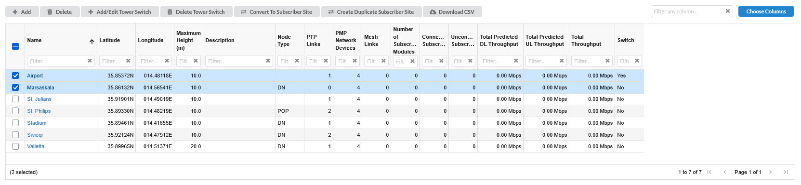

When one or more network sites have been created, they appear in the Network Sites List.
To display this list, click the beside the “Network Sites” menu in the navigation tree. The Network Sites tree is displayed in the left hand panel. To display the subscriber sites, click the beside the Subscriber Sites node in the navigation tree. The Sites lists for both Network Sites and Subscriber Sites can be viewed and modified in exactly the same way.
To display the sites in a table view, click on “Network Sites” node in the navigation tree. The table view shows the co-ordinates, height and description for both network and subscriber sites. For network sites it also shows the Node Type (only applicable for 60 GHz cnWave products), number of PMP Network Devices at each site, number of PTP links at each site, number of Mesh links at each site, total subscriber connections, total throughput for all Network Devices on the site and Site owner if any. For subscriber sites the table shows the number of PMP links at each site. To manage the table view see User Interface Tips.
Sites can be added in the Sites Table view. To add a site in the table view, click icon. This opens the New Site pop-up window. Enter the details for the new site and then click
To delete a site, hover over the site name in the Network Sites or Subscriber Sites tree view and click , click on the details page, select rows and click in the table view, or right-click on the Site in the map view and select Delete from the pop-up menu.
To revert the changes made, click the icon, which is displayed next to the Apply button. This icon is only displayed when there are changes to the parameters, replacing the icon.
Site Name and Description can be edited directly in the Sites table. To edit any other Site attributes, click on the Site and update it in the Site Page.
To locate the sites in the map view, click icon, which is displayed next to the icon at the top.
Sites can be converted from Network Sites to Subscriber Sites or from Subscriber Sites to Network Sites. To convert a Network Site(s) to Subscriber Site(s), open the Network Site Table view, tick the box(es) to the left of the site name and click . To convert a Subscriber Site(s) to Network Site(s), open the Subscriber Site Table view, tick the box(es) to the left of the site name and click .
Sites can be duplicated from Network Sites to Subscriber Sites or from Subscriber Sites to Network Sites. To duplicate a Network Site(s) as a Subscriber Site(s), open the Network Site Table view, tick the box(es) to the left of the site name and click . To duplicate a Subscriber Site(s) to Network Site(s), open the Subscriber Site Table view, tick the box(es) to the left of the site name and click .

Converting or Duplicating Network and Subscriber Sites¶
If a site already has links or Network Devices attached to it, these will be deleted if a site is converted rather than duplicated.

 icon, which is displayed on the right hand side of the site.
icon, which is displayed on the right hand side of the site. , click
, click  in the table view, or right-click on the Site in the map view and select Delete from the pop-up menu.
in the table view, or right-click on the Site in the map view and select Delete from the pop-up menu. icon, which is displayed next to the Apply button. This icon is only displayed when there are changes to the parameters, replacing the
icon, which is displayed next to the Apply button. This icon is only displayed when there are changes to the parameters, replacing the  icon.
icon.